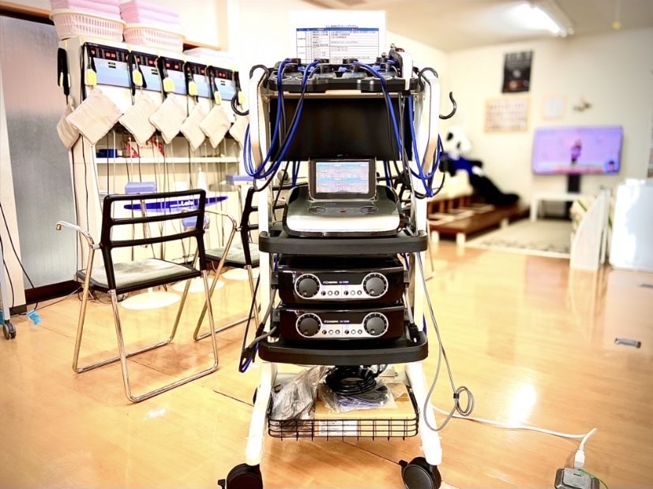

骨折の治療期間の短縮
今までの骨折治療では、整後、固定後に骨が自然修復されるのを待ちましたが、近年は超音波を骨折箇所に照射することで、細胞が活性化され、自然治癒能力が高まり、骨折の治療を促進
させられることが分かっています。
照射される非常に低出力(30mw)の超音波です。骨癒合を促進する超音波は、通常の超音波が連続的なのに対し、パルス状にして断続的になっていることが特徴です。
パルス状の超音波でなければ、骨癒合促進効果がないことが明らかになっています。また非常に低出力なので、患者自身は何も感じず、全く痛みもない
のです。この超音波を1日に20分骨折部に充てることで、自然治癒を待つよりも骨折の治療期間を、約4割短縮する効果が証明されています。
また体表に近い骨ばかりではなく、患部の骨にもしっかり届くことが確認されています。
立体動態波・EMS治療器
伊藤超短波社製
ES-8000
最新医療機器 ES-8000に出来ること

最新医療機器「伊藤超短波 ES-8000」が練馬区の整骨院で初めて導入されました。様々な症状に合わせて細かい設定の出来るこの機器は、スポーツや日常生活の中での外傷や痛みはもちろんの事、今話題の「腸活」「自律神経系の改善」や「エステ効果」としてのプログラムも設定出来るという、非常に多種多様な症状改善に対応しています。
現在、様々なスポーツの現場、Jリーグやプロ野球、BリーグやVリーグ、その他様々なプロスポーツやナショナルチームの現場に配備されています。
トップアスリートの現場よりフィードバックされた多くのデータを元に、ES-8000に細かく設定されたプログラムにより、それぞれの症状に最適化された治療を提供する事が可能になっていて、以前よりも「早期現場復帰」を実現し利用された皆様に喜ばれています。
マラソン、水泳、サッカー、野球、ダンス、ゴルフ、スキー、スノーボード、etcなどの様々なスポーツを趣味として楽しまれる方、或いは学生クラブ活動の中で起こり得る障害や困難のさ改善、その他にも状況なや場面ごとのコンディショニングの為のプログラムも設定されています。
例えば今は大会までの時間があるので、かなり追い込んだ練習内容を行っているのならばその為のプログラム、大会を直後に控えたタイミングに最善のプログラムなどと、治療ばかりでなく「コンディショニング」としての活用も大変得意とした仕様になっています。
どうぞ皆様のライフスタイルに合わせた相談をお持ち下さい。個々の内容本当の意味での個別治療を進めて参ります。
ES―8000に出来る事 (日常生活編)
ES-8000ではスポーツや日常生活の中での外傷や痛みの改善だけでなく、主に次の3つの事の改善を得意としています。
１．自律神経系の改善
ES-8000が作り出す事の可能な電気の種類の中には「血流の改善」を促す電気の種類があります。この機種が作り出す最大の特徴は「3D」いわゆる「立体的に」電気を流す事が可能だという事です。それは即ち電流が「奥深くまで届く」という事が最大の特徴になります。
深い部分に存在する神経にも届くという事で、自律神経系の不都合による症状、「疲れが取れない」「睡眠障害」「便秘、下痢などの便通の異常」「生理不順」「偏頭痛、耳鳴り」「めまい」「肌荒れ」「胃痛、胃もたれ」「食欲不振」「体、顔の火照り」「冷え性」「息切れ」「不安感、緊張感」「集中力や、やる気の減退」「肩こり、腰痛」「なとの自律神経系の異常から引き起こされる様々な障害があります。
それらの改善を促すプログラムも入力されていますので、心当たりのある方はどうぞ遠慮なくご相談にいらして下さい。
２．痩身+腸活
前述しました様にES-8000は「3D」による深部まで届く電流を最大の特徴としていますので、深部の筋肉に刺激を入れる事により、血流を改善して腸の活動を活発する事が可能になっています。
特に腹部において腸の活動を促す事により、それらから期待の出来る「便秘」などの改善効果からもたらされる「痩身効果」も期待出来ます。
特に「腸活」プログラムは特殊なプログラムとなっていて、独特の動きの得られる電流の感じ方となっています。
３．表情筋トレーニング (リフトアップ)
ES-8000が最も得意とする作業が筋肉に対するアプローチです。筋肉を鍛えること、柔らかくすること、血液の循環を良くすること、それこそ様々なことが出来ます。
顔も表情筋という沢山の筋肉で構成されています。その表情筋も年齢や環境などの理由により筋肉が衰えてきます。
フェイスラインが弛んできて「二重あご」になったり、太っていないのに「ほうれい線が深くなる」など、「老けた？」と思われる要素がたくさん出て来ます。
先程も申し上げた通りES-8000の得意なことは、深い筋肉にアプローチして鍛える事や柔らかくする事が出来るという事です。
ES-8000は医療機器になりますので、一般のエステティックサロンなどには設置する事は出来ません。
医療機器でしか作り出せない電気のチカラを利用して、正に顔の「リフトアップ効果」を導き出す事が期待出来ます。
せっかくその様な素晴らしいプログラムが有るのですから、希望される皆様に提供しないのは勿体無いという事になりました。
せっかく持ち合わせている機能ですので、可能な限り「安価」に提供出来れば喜んで頂けるのでは無いかという事になりました。
我々は最初の機器の説明と、使用方法のご案内のみです。
「本当に気軽に、敷居を出来るだけ低くフェイシングを！」
がテーマになっていますので、遠慮なくお声掛けして下さい。